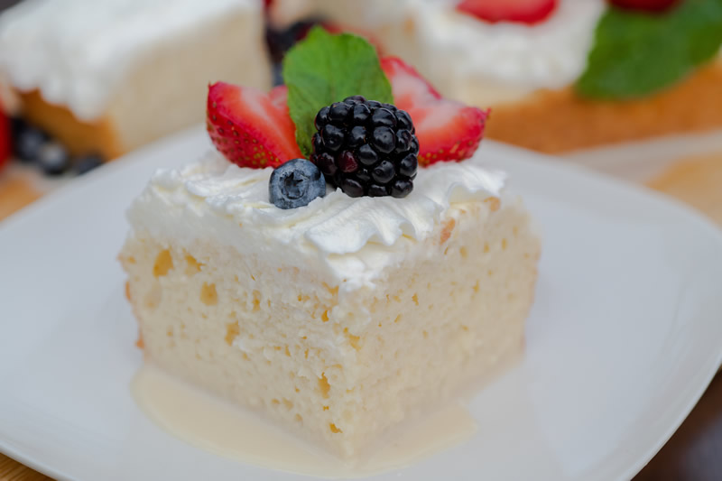
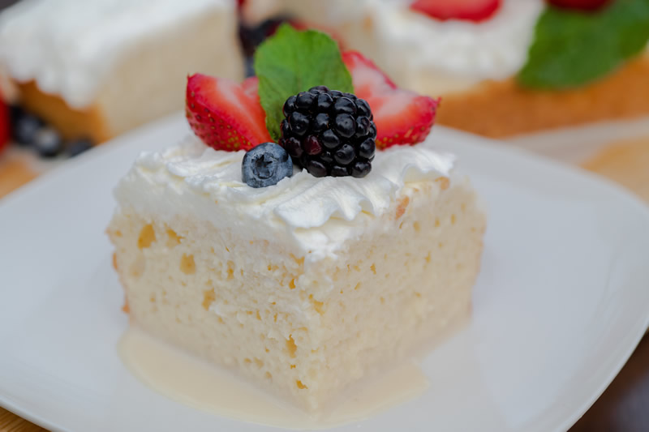

Matcha Cookies
About
Origin: JapaneseSource: Just One Cookbook
Category: Dessert
These cookies have the perfect flavor balance of the earthiness from the matcha and the sweetness and creaminess from the white chocolate chips. They are crispy and sweet, perfect for an afternoon snack or dessert. Enjoy with a cup of tea!
Recipe Ingredients
- All purpose flour
- Matcha powder
- Unsalted butter
- Kosher salt
- Confectioners sugar
- Egg yolks
- White chocolate chips
Recipe Steps
- Combine flour and matcha powder in large bowl Sift the flour and matcha powder
- Beat softened butter until smooth and creamy
- Add salt and blend
- Add sugar and beat until soft and light
- Add egg yolks and mix until well combined
- Gradually add flour and matcha mixture and mix until well combined
- Add chocolate chips and mix until incorporated
- Divide dough into two pieces. Shape each piece into cylinders about 1.5in in diameter
- Wrap logs in plastic wrap and chill in fridge for at least two hours
- Slice into ⅓ inch rounds and place on a baking tray lined with parchment paper
- Bake at 350 degrees for 15 minutes
Additional Food Images


Tres Leches Cake
About
Origin: Latin AmericaSource: Allrecipes
Category: Dessert
This cake is a staple at any Latin birthday or celebration. The name translates to "three milks" cake, and the cake is typically very moist and is best eaten wet. Rich in taste and historical tradition, Tres Leches Cake has become universally loved for its unique texture and decadent flavor profile.
Recipe Ingredients
- All purpose flour
- Baking powder
- White sugar
- Eggs
- Vanilla extract
- Whole milk
- Sweetened condensed milk
- Evaporated milk
- Heavy whipping cream
Recipe Steps
- Preheat the oven to 350 degrees F (175 degrees C)
- Grease and flour a 9x13-inch baking pan
- Sift flour and baking powder together; set aside
- Beat sugar and butter together in a large bowl with an electric mixer until light and fluffy
- Add eggs and vanilla; beat well
- Add flour mixture, about 1/2 cup at a time, mixing until well blended; pour batter into the prepared pan
- Bake in the preheated oven until a toothpick inserted into the center comes out clean, about 30 minutes
- Pierce cake all over with a fork; let cool to room temperature
- Mix whole milk, condensed milk, and evaporated milk together in a bowl; pour over the top of the cooled cake and allow to soak in
- Whip cream, remaining 1 cup of sugar, and 1 teaspoon vanilla in a chilled glass or metal bowl with an electric mixer until thick
- Spread over the top of the filling
- Keep cake refrigerated until serving
Additional Food Images
 


Twice Baked Potato
About
Origin: South AmericaSource: Allrecipes
Category: Main dish, comfort food
These twice-baked potatoes work perfectly as a simple, crowd-pleasing entrée or as a rich side dish. It is believed that baked potatoes originate from South America, or more specifically, Peru. The Inca Indians in Peru were said to be the first to originally cultivate potatoes and when the Spanish conquistadors conquered Peru, they brought the potato to Europe.
Recipe Ingredients
- Large baking potatoes
- Bacon
- Sour cream
- Milk
- Butter
- Salt
- Pepper
- Shredded cheddar cheese
- Green onions
Recipe Steps
- Gather ingredients and preheat the oven to 350 degrees F (175 degrees C)
- Bake potatoes in the preheated oven until tender, about 1 hour, depending on the size of your potatoes
- Set potatoes aside until cool enough to handle
- Meanwhile, place bacon in a large, deep skillet
- Cook over medium-high heat until evenly brown; drain, crumble, and set aside
- Slice potatoes in half lengthwise and scoop the flesh into a large bowl; save skins
- Add sour cream, milk, butter, salt, pepper, 1/2 cup cheese, and 1/2 of the green onions to the potato; mix with a hand mixer until well blended and creamy
- Spoon the mixture into the potato skins; top each with remaining cheese, green onions, and bacon
- Pierce cake all over with a fork; let cool to room temperature
- Return potatoes to the preheated oven and continue baking until the cheese is melted, about 15 minutes
- Serve hot
Additional Food Images